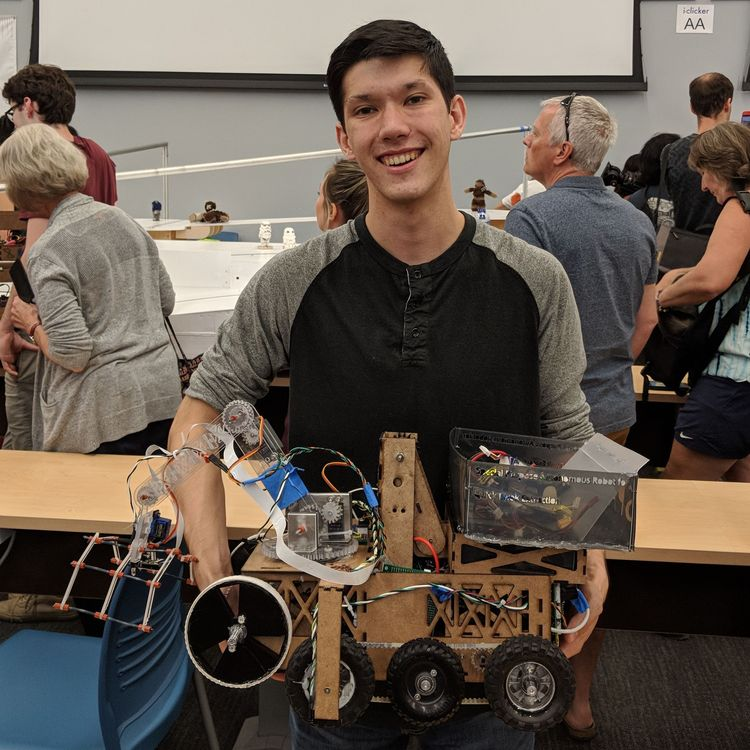

Noah worked on the mechanical design of the chassis, various parts of the electronics and contributed extensively to the software including the OpenCV algorithm and communication protocol.

Sean Bergman
Sean worked on the electronics and software for IR frequency detection as well as the edge detectors.
Alex designed, built and wrote software for the arm and claw, as well as contributing to overall mechanical design, assembling the chassis and soldering circuits.